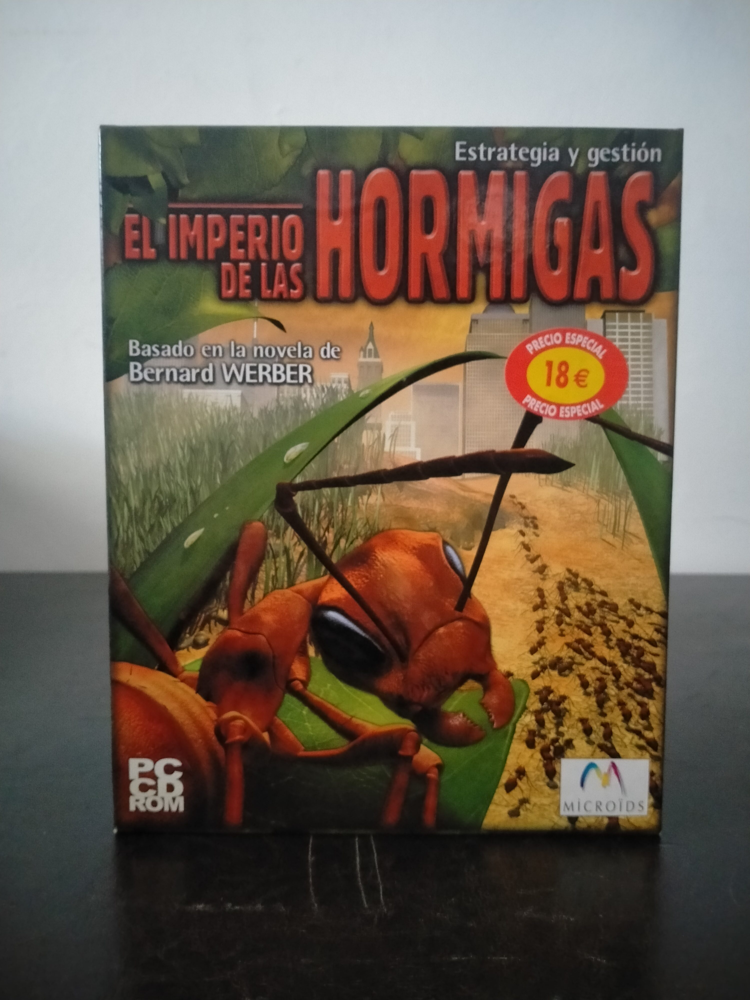

Ficha #000000
El Imperio de las Hormigas
El Imperio de las Hormigas es un juego de estrategia y gestión desarrollado por Microïds y basado en la novela de Bernard Werber, conocida originalmente como Les Fourmis. Su planteamiento resulta singular dentro de la estrategia de PC de comienzos de los años 2000 al trasladar la construcción, expansión y supervivencia de una civilización al universo de una colonia de hormigas. El jugador debe explorar nuevos territorios, recolectar recursos, proteger el hormiguero frente a depredadores y fuerzas naturales, organizar expediciones y expandirse hacia colonias vecinas. El título utiliza un entorno 3D en tiempo real con cámara dinámica, inteligencia artificial orientada al comportamiento colectivo de los insectos y reproducción de distintas especies, buscando una aproximación híbrida entre RTS, simulación ecológica y gestión de colonia. Esta edición española distribuida por Friendware conserva interés documental por representar una adaptación literaria europea poco habitual, publicada en PC CD-ROM durante la transición del género de estrategia hacia motores tridimensionales.
- Formato
- Big Box
- Plataforma
- Win95 Win98
- Género
- Estrategia en tiempo real Gestión Simulación Gestión de recursos
- Serie
- Todos Big Box
- Desarrollador
- Microïds
- Distribuidor
- Microïds, Friendware
- EAN
- —
Contenido de la edición
- Caja Big Box
- CD-ROM
Preservación
- Protección
- No determinado
- Formato recomendado
- BIN/CUE
- Jugable en virtualización
- Sí
Preservación recomendada mediante imagen completa del CD-ROM original en formato BIN/CUE o ISO, junto con digitalización de la caja y documentación asociada si se conserva. La ejecución virtual debería ser viable en un entorno Windows 95/98 con DirectX de época, aunque debe verificarse si la edición concreta aplica comprobación de disco.